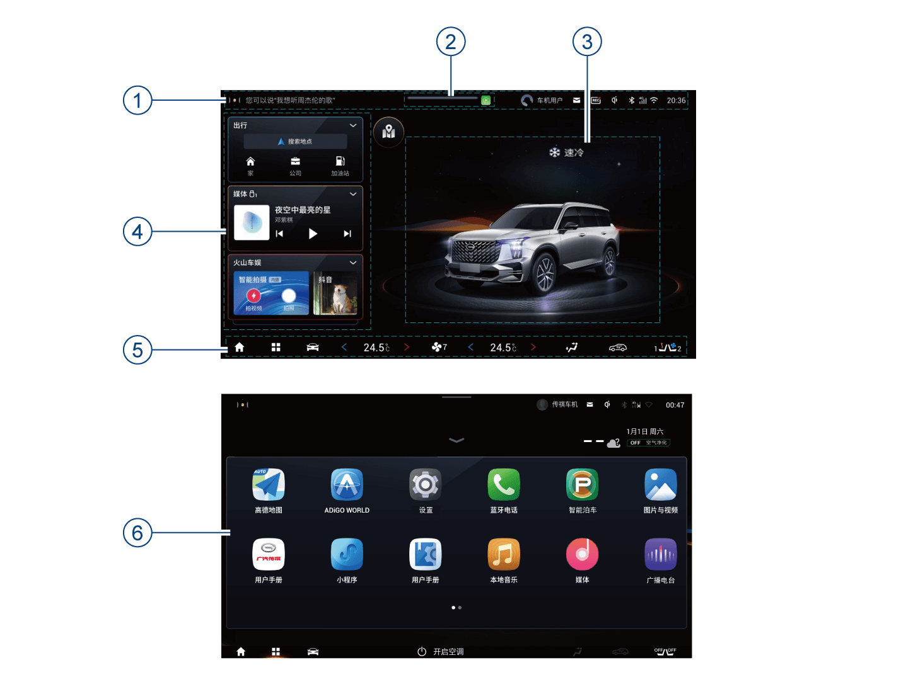
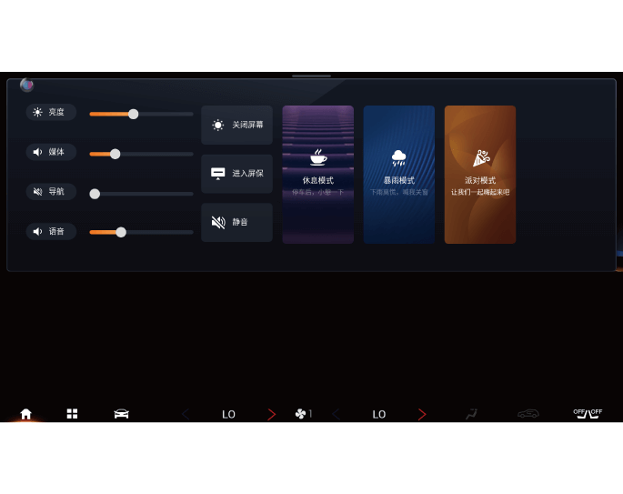
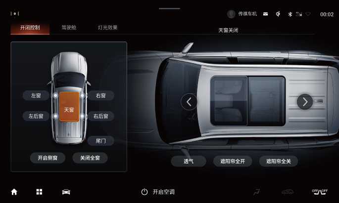
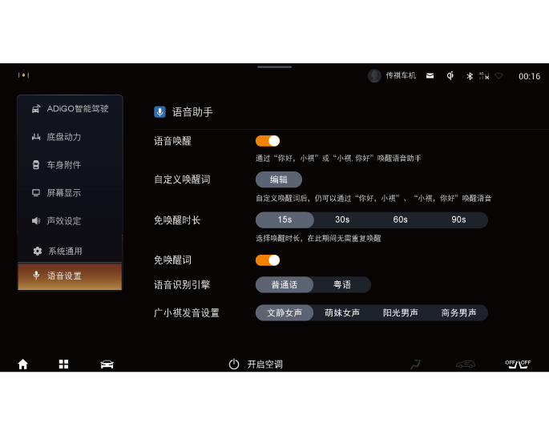

5.7.3 基本操作
主界面功能区域说明:
①系统状态栏
–显示“语音入口、账号快捷入口、消息中心入口、DVR显示及入口、无线充电显示、连接显示及快捷入口、时间显示及格式快速调节入口”等系统状态，点击图标可进入对应的功能界面。
② 下拉菜单示意区
– 在任意界面从屏幕顶部（下拉栏区域）向下滑动，可进入下拉菜单栏控制界面。
③ 智能场景区
可在3D车模场景和地图场景两种不同场景间进行切换显示。
– 在3D车模场景界面点击按键可切换至地图场景显示界面。
– 在地图场景界面点击 按键可切换至3D车模场景显示界面。
按键可切换至3D车模场景显示界面。
④ 智能卡片区
– 点击卡片快速进入相应功能界面。
– 可通过自定义添加其它卡片及排序。
⑤ 底部工具栏
– Home键：点击返回主界面。
– 系统菜单键 ：点击进入应用菜单界面。
：点击进入应用菜单界面。
– 驾控面板键：点击进入驾控面板。
– 座椅模块键
 ：点击进入座椅通风加热控制界面。
：点击进入座椅通风加热控制界面。
– 空调信息显示/控制栏区：显示当前空调信息，点击左/右空调区域，进入空调设置界面。
⑥ 应用菜单界面
– 点击桌面底部工具栏的菜单键进入系统详细应用菜单界面。
时间设置
– 系统会自动同步刷新GPS的时间，不需要自行设置。
下拉菜单栏
在其它任意界面从屏幕顶部（下拉栏区域）向下滑动调出下拉菜单。可点击或向上滑动收起下拉菜单栏。处于下拉菜单栏界面，若无操作，20s后下拉栏菜单自动收起。
点击下拉菜单栏功能按键可开启/关闭对应功能，或进入对应的功能界面。
我的车
音响系统开启正常工作后，点击主界面“智能场景区的3D车模”或应用菜单界面“我的车”软按键可进入我的车功能界面。
可对“开闭控制（天窗*、车窗、后背门）”、“驾驶舱（座椅调节、后视镜调节）”、“灯光效果（灯光秀*、氛围灯）”进行调节。
语音
音响系统开启正常工作后，非免唤醒的语音指令在下达之前需要唤醒语音引擎，可通过以下方式启动语音功能：
–按下方向盘右侧按键，进入语音模式。
–通过说出语音唤醒词：默认唤醒词为“你好，小祺”，另一个唤醒词可自行定义。
–点击音响系统显示屏左上角的软按键，进入语音模式。
定义方式如下：
1. 通过“你好，小祺”唤醒语音助手，说出“给你取个名叫XXX”，则完成第二个语音唤醒词的设定。
2. 用户可通过“设置→语音设置→语音助手”进行语音功能设置。
在唤醒语音系统听到一声提示音后，才可进行语音控制操作。
语音识别的成功率会受客观环境影响，如环境噪声情况、网络信号情况等，以及用户使用习惯、发音等外界因素的影响，具体使用效果以实车使用环境为准。
语音设置
进入音响系统“设置→语音设置→语音助手”界面，对语音功能进行设置，选择开启/关闭。
1. 免唤醒时长
– 可设置为关闭15秒/30秒/60秒/90秒。
2. 自定义唤醒词
–您可根据自身习惯、喜好修改语音助手唤醒词，自定义唤醒词修改后，仍可以通过“你好，小祺”、“小祺，你好”唤醒语音。
— 页面到底了 —